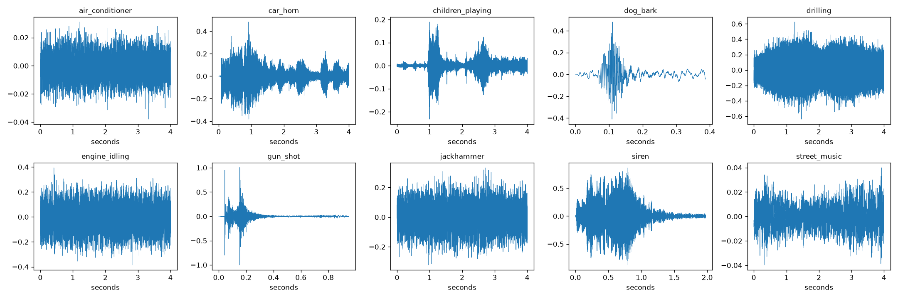
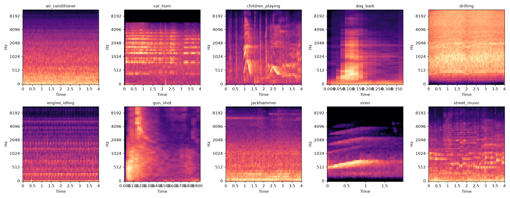
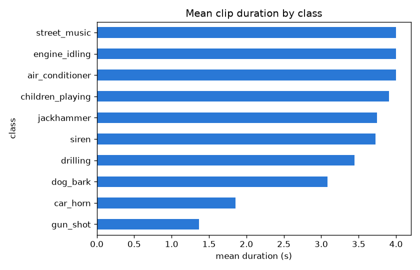
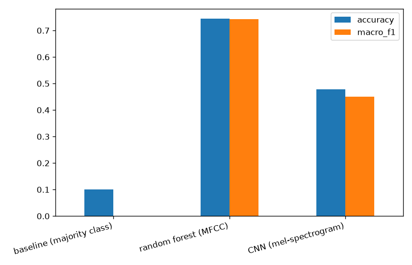
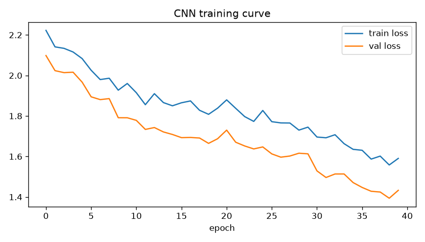
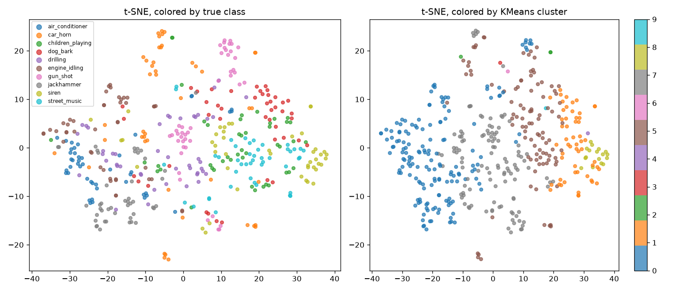

Urban Sound Classification: MFCC Features and a CNN
Classifying 10 categories of urban sound from a 450-clip stratified sample of UrbanSound8K (45 per class), fetched directly through per-row signed audio URLs so nothing close to the full ~6.5GB archive needs to sit on disk. A 120-dim MFCC feature vector (mean, standard deviation, and delta of 40 coefficients) feeds a random forest, and fixed-size mel-spectrograms feed a Conv2D/MaxPooling2D CNN, both evaluated on the same stratified held-out test split.
The data



Feature engineering
- 120-dim MFCC vectors (mean, standard deviation, and delta of 40 coefficients) capture how the audio's spectral profile changes over a clip, not just its average.
- A Conv2D/MaxPooling2D CNN runs on fixed-size mel-spectrograms, padded or trimmed to a consistent shape across clips of different lengths.
- A stratified 80/20 split, held out and scored the same way for every model, keeps the comparison between random forest and CNN fair.
Modeling: classical features vs a convolutional model
Random forest on the MFCC features against the CNN on mel-spectrograms, both evaluated on the same stratified 80/20 split.
| Model | Accuracy | Macro-F1 |
|---|---|---|
| Baseline (majority class, balanced 10-way) | 10.0% | 0.000 |
| Random forest (MFCC features) | 74.4% | 0.743 |
| CNN (mel-spectrogram) | 41.1% | 0.371 |


Unsupervised: MFCC profiles alone don't cleanly separate all 10 classes
Clustering all 450 clips by their MFCC feature vector, no label involved, then checking against the real classes afterward.

Far weaker than the supervised 74.4% accuracy. Classes like
car_horn and siren overlap enough in raw
MFCC space that unsupervised methods can't cleanly separate them
without labels to learn from, a real, honest contrast between what
supervision buys you and what feature similarity alone can find.
Key findings
- MFCC features (mean, std, delta) plus a random forest reach 74.4% accuracy against a 10% baseline, a genuinely strong result at this sample size.
- The CNN underperforms the classical model here (41.1% vs 74.4%), a scale-dependent finding, not a general verdict on CNNs for audio.
- Unsupervised clustering only weakly recovers the 10 classes (ARI 0.10-0.11) compared to the supervised result, labels are doing real work here.
Future work
- Scale up to the full UrbanSound8K corpus (about 870 clips per class) on a machine with enough disk to hold it, to see whether the CNN overtakes the classical model at full scale, as expected.
- Try transfer learning from an audio-pretrained model (VGGish, YAMNet, or a similar embedding model) instead of training a CNN from scratch on so little data.
- Use UrbanSound8K's official 10-fold cross-validation split (grouped by source recording) instead of a plain random split, to avoid any risk of near-duplicate clips from the same source file leaking across train and test.